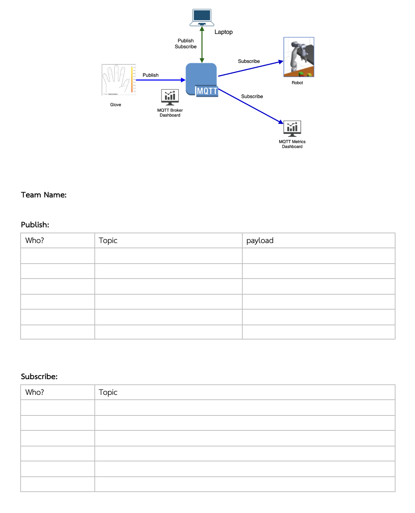

Compose is a tool for defining and running multi-container Docker applications. With Compose, you use a YAML file to configure your application’s services. Then, with a single command, you create and start all the services from your configuration.
A docker-compose.yml looks like this:
version: '3'
services:
emqx-mqtt:
image: emqx/emqx:5.0.7-elixir
container_name: emqx
networks:
- my-network
volumes:
- ./emqx_data:/opt/emqx/data
- ./emqx_log:/opt/emqx/log
ports:
- 1883:1883
- 8083:8083
- 8084:8084
- 8883:8883
- 18083:18083
node-red:
image: nodered/node-red
container_name: node-red
networks:
- my-network
volumes:
- ./node_red_data:/data
ports:
- 1880:1880
networks:
my-network:
$ docker compose up
[+] Running 3/3
⠿ Network docker-topgun-compose_my-network Created 0.0s
⠿ Container emqx Created 0.1s
⠿ Container node-red Created 0.0s
Attaching to emqx, node-red
Stop compose
$ docker compose stop
[+] Running 2/2
⠿ Container node-red Stopped 0.1s
⠿ Container emqx Stopped 1.4s
Remove compose
$ docker compose down
[+] Running 3/0
⠿ Container node-red Removed 0.0s
⠿ Container emqx Removed 0.0s
⠿ Network docker-topgun-compose_my-network Removed 0.1s
Move arm to coordinate x, y, z to topic "topgun/team1/arm/move/"
{
"x": 10,
"y": 180,
"z": 30
}
Grasp fingers to topic "topgun/team1/fingers/grasp/"
{
"finger1": 80,
"finger2": 20,
"finger3": 30,
"finger4": 40,
"finger5": 10
}
